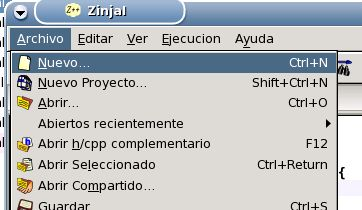
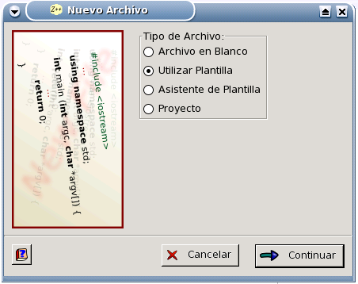
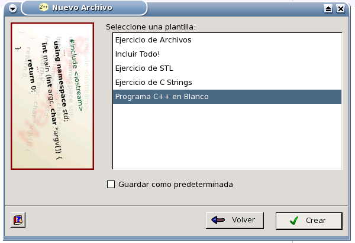
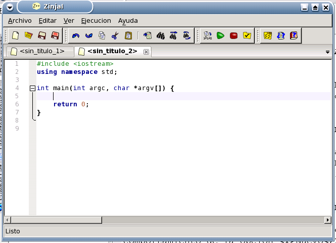

Lo primero que debe hacer, es crear un nuevo programa. Para ello seleccione la opción Nuevo... del menú Archivo.

Se desplegará inmediatamente el Asistente para Nuevo Archivo. Allí seleccione la opción Utilizar Plantilla y haga click en el botón Continuar.
(nota: si el asistente no aparece puede que haya alterado el comportamiento de la opción Nuevo desde el Diálogo de Preferencias).

A continuación seleccione la plantilla Programa C++ en Blanco y presione Crear.

Esta acción cerrará el asistente y le abrirá una nueva pestaña con el esqueleto de un programa C++ (incluye la cabecera iostream y define la función main), y le posicionará el cursor en la primer línea de la función main para que comience a escribir.

Volver... Continuar...